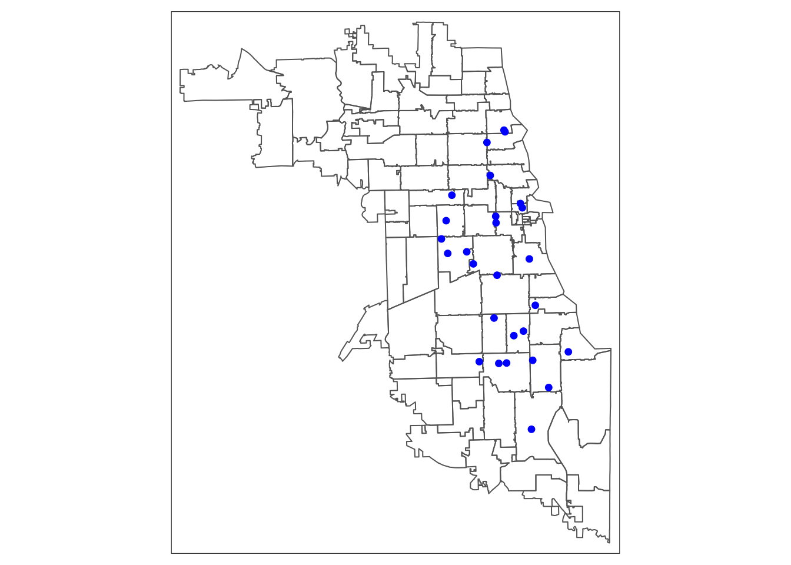
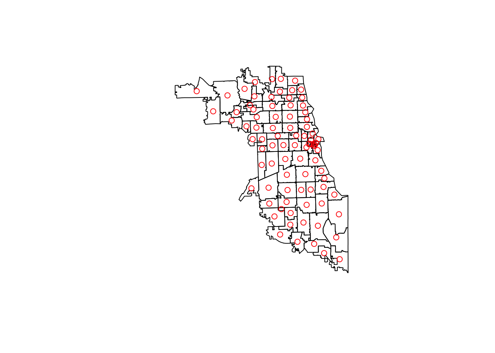
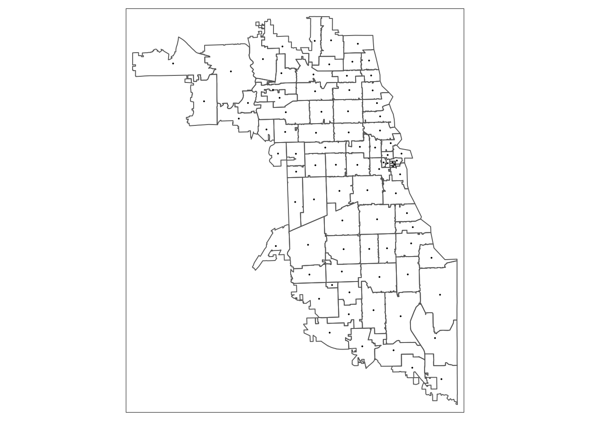
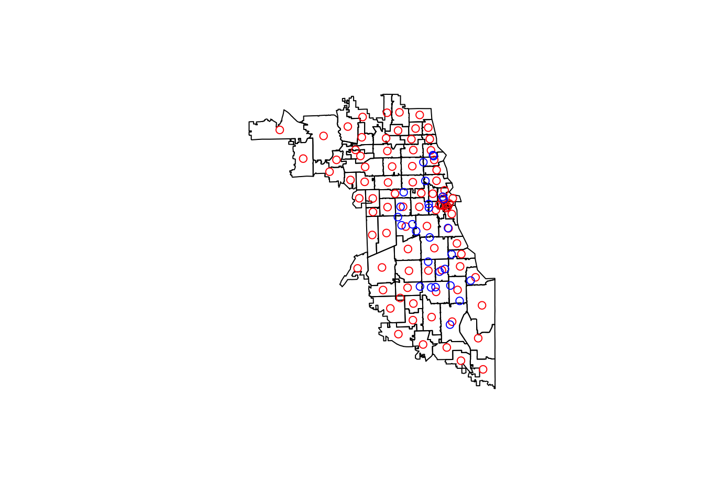
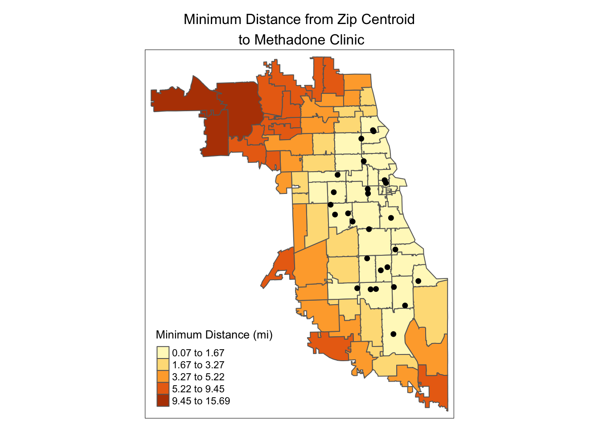

1 Min. Dist Access Analysis
1.1 Overview
Spatial Access to specific resource is often considered a multidimensional concept where accessibility can be measured on affordability, availability, accommodation & acceptability [include reference]. Distance to the nearest resource is a common metric used to capture the availability of a resource, and in this tutorial we demonstrate how to calculate a minimum distance value from a zip code centroid to a set of resources, such as locations of methadone clinics. Each zip code will be assigned a “minimum distance access metric” as a value that indicates access to resources from that zip code. Our objectives are thus to:
- Generate centroids from areal data
- Calculate minimum distance from resources to area centroids
- Overlay resources and new minimum distance metric
1.2 Environment Setup
To replicate the codes & functions illustrated in this tutorial, you’ll need to have R and RStudio downloaded and installed on your system. This tutorial assumes some familiarity with the R programming language.
1.2.1 Packages used
We will use the following packages in this tutorial:
sf: to manipulate spatial datatmap: to visualize and create mapsunits: to convert units within spatial data
1.2.2 Required Inputs and Expected Outputs
Our inputs will be:
- a CSV file with the locations of our resources (“chicago_methadone.csv”), and
- a zip code boundary file (“chicago_zips.shp”).
We will calculate the minimum distance between the resources and the centroids of the zip codes, then save the results as a shapefile and as a CSV. Our final result will be a shapefile/CSV with the minimum distance value for each zip.
1.2.3 Load the packages
Load the libraries for use.
## Warning: package 'sf' was built under R version 3.6.2## Linking to GEOS 3.7.2, GDAL 2.4.2, PROJ 5.2.0## Warning: replacing previous import 'sf::st_make_valid' by
## 'lwgeom::st_make_valid' when loading 'tmap'## Warning: package 'units' was built under R version 3.6.2## udunits system database from /Library/Frameworks/R.framework/Versions/3.6/Resources/library/units/share/udunits1.3 Load data
First, load in the MOUD resources shapefile. Let’s take a look at the first few rows of the dataset.
## Reading layer `methadoneClinics' from data source `/Users/maryniakolak/code/opioid-environment-toolkit/methadoneClinics.shp' using driver `ESRI Shapefile'
## Simple feature collection with 27 features and 8 fields
## geometry type: POINT
## dimension: XY
## bbox: xmin: -87.7349 ymin: 41.68698 xmax: -87.57673 ymax: 41.96475
## CRS: 4326## Simple feature collection with 6 features and 8 fields
## geometry type: POINT
## dimension: XY
## bbox: xmin: -87.67818 ymin: 41.89268 xmax: -87.63409 ymax: 41.96475
## CRS: 4326
## X Name
## 1 1 Chicago Treatment and Counseling Center, Inc.
## 2 2 Sundace Methadone Treatment Center, LLC
## 3 3 Soft Landing Interventions/DBA Symetria Recovery of Lakeview
## 4 4 PDSSC - Chicago, Inc.
## 5 5 Center for Addictive Problems, Inc.
## 6 6 Family Guidance Centers, Inc.
## Address City State Zip
## 1 4453 North Broadway st. Chicago IL 60640
## 2 4545 North Broadway St. Chicago IL 60640
## 3 3934 N. Lincoln Ave. Chicago IL 60613
## 4 2260 N. Elston Ave. Chicago IL 60614
## 5 609 N. Wells St. Chicago IL 60654
## 6 310 W. Chicago Ave. Chicago IL 60654
## fullAdd geo_method
## 1 4453 North Broadway st. Chicago IL 60640 osm
## 2 4545 North Broadway St. Chicago IL 60640 osm
## 3 3934 N. Lincoln Ave. Chicago IL 60613 census
## 4 2260 N. Elston Ave. Chicago IL 60614 census
## 5 609 N. Wells St. Chicago IL 60654 census
## 6 310 W. Chicago Ave. Chicago IL 60654 census
## geometry
## 1 POINT (-87.65566 41.96321)
## 2 POINT (-87.65694 41.96475)
## 3 POINT (-87.67818 41.95331)
## 4 POINT (-87.67407 41.92269)
## 5 POINT (-87.63409 41.89268)
## 6 POINT (-87.63636 41.89657)If you don’t have a shapefile of your data, but already have geographic coordinates as two columns in your CSV file, you can still use this tutorial. A reminder of how to transform your CSV with coordinates into a spatial data frame in R can be found here.
Next, we’ll load Chicago zip code boundaries.
We can quickly plot our data for to confirm they loaded correctly, here using an interactive map:

1.4 Calculate centroids
Now, we will calculate the centroids of the zip code boundaries. We will first need to project our data, which means change it from latitude and longitude to meaningful units, like ft or meters, so we can calculate distance properly. We’ll use the Illinois State Plane projection, with an EPSG code of 3435.
Aside: To find the most appropriate projection for your data, do a Google Search for which projection works well - for state level data, each state has a State Plane projection with a specific code, known as the EPSG. I use epsg.io to check projections - here’s the New York State Plane page.
Use the st_transform function to change the projection of the data. Notice how the values in geometry go from being relatively small (unprojected, lat/long) to very large (projected, in US feet).
## Simple feature collection with 85 features and 9 fields
## geometry type: MULTIPOLYGON
## dimension: XY
## bbox: xmin: 1058388 ymin: 1791133 xmax: 1205317 ymax: 1966816
## CRS: EPSG:3435
## # A tibble: 85 x 10
## ZCTA5CE10 GEOID10 CLASSFP10 MTFCC10 FUNCSTAT10 ALAND10 AWATER10 INTPTLAT10
## * <chr> <chr> <chr> <chr> <chr> <chr> <chr> <chr>
## 1 60501 60501 B5 G6350 S 125322… 974360 +41.78022…
## 2 60007 60007 B5 G6350 S 364933… 917560 +42.00860…
## 3 60651 60651 B5 G6350 S 9052862 0 +41.90209…
## 4 60652 60652 B5 G6350 S 129878… 0 +41.74793…
## 5 60653 60653 B5 G6350 S 6041418 1696670 +41.81996…
## 6 60654 60654 B5 G6350 S 1464813 113471 +41.89182…
## 7 60655 60655 B5 G6350 S 114080… 0 +41.69477…
## 8 60656 60656 B5 G6350 S 8465226 0 +41.97428…
## 9 60657 60657 B5 G6350 S 5888324 2025836 +41.94029…
## 10 60659 60659 B5 G6350 S 5251086 2818 +41.99148…
## # … with 75 more rows, and 2 more variables: INTPTLON10 <chr>,
## # geometry <MULTIPOLYGON [US_survey_foot]>Then, we will calculate the centroids:
## Warning in st_centroid.sf(chicago_zips): st_centroid assumes attributes are
## constant over geometries of x## Simple feature collection with 85 features and 9 fields
## geometry type: POINT
## dimension: XY
## bbox: xmin: 1076716 ymin: 1802621 xmax: 1198093 ymax: 1956017
## CRS: EPSG:3435
## # A tibble: 85 x 10
## ZCTA5CE10 GEOID10 CLASSFP10 MTFCC10 FUNCSTAT10 ALAND10 AWATER10 INTPTLAT10
## * <chr> <chr> <chr> <chr> <chr> <chr> <chr> <chr>
## 1 60501 60501 B5 G6350 S 125322… 974360 +41.78022…
## 2 60007 60007 B5 G6350 S 364933… 917560 +42.00860…
## 3 60651 60651 B5 G6350 S 9052862 0 +41.90209…
## 4 60652 60652 B5 G6350 S 129878… 0 +41.74793…
## 5 60653 60653 B5 G6350 S 6041418 1696670 +41.81996…
## 6 60654 60654 B5 G6350 S 1464813 113471 +41.89182…
## 7 60655 60655 B5 G6350 S 114080… 0 +41.69477…
## 8 60656 60656 B5 G6350 S 8465226 0 +41.97428…
## 9 60657 60657 B5 G6350 S 5888324 2025836 +41.94029…
## 10 60659 60659 B5 G6350 S 5251086 2818 +41.99148…
## # … with 75 more rows, and 2 more variables: INTPTLON10 <chr>, geometry <POINT
## # [US_survey_foot]>For each zip code, this will calculate the centroid, and the output will be a point dataset.
Plot to double check that everything is ok. The st_geometry() function will once again just return the outline:

1.4.1 Visualize & Confirm
Once again, we can create an interactive map:

1.5 Standardize CRS
If we immediately try to calculate the distance between the zip centroids and the locations of the resources using the st_distance function, we’ll get an error:
Error in st_distance(chicago_centroids, meth_sf, by_element = TRUE) : st_crs(x) == st_crs(y) is not TRUEWhy is there an error? Because the projection of the centroids and the resource locations don’t match up. Let’s project the resource locations so that they match the projection of the centroids.
First, use the st_crs function to check that the coordinate reference system (or projection) is the same. They’re not, so we have to fix it.
## Coordinate Reference System:
## User input: EPSG:3435
## wkt:
## PROJCS["NAD83 / Illinois East (ftUS)",
## GEOGCS["NAD83",
## DATUM["North_American_Datum_1983",
## SPHEROID["GRS 1980",6378137,298.257222101,
## AUTHORITY["EPSG","7019"]],
## TOWGS84[0,0,0,0,0,0,0],
## AUTHORITY["EPSG","6269"]],
## PRIMEM["Greenwich",0,
## AUTHORITY["EPSG","8901"]],
## UNIT["degree",0.0174532925199433,
## AUTHORITY["EPSG","9122"]],
## AUTHORITY["EPSG","4269"]],
## PROJECTION["Transverse_Mercator"],
## PARAMETER["latitude_of_origin",36.66666666666666],
## PARAMETER["central_meridian",-88.33333333333333],
## PARAMETER["scale_factor",0.999975],
## PARAMETER["false_easting",984250.0000000002],
## PARAMETER["false_northing",0],
## UNIT["US survey foot",0.3048006096012192,
## AUTHORITY["EPSG","9003"]],
## AXIS["X",EAST],
## AXIS["Y",NORTH],
## AUTHORITY["EPSG","3435"]]## Coordinate Reference System:
## User input: 4326
## wkt:
## GEOGCS["WGS 84",
## DATUM["WGS_1984",
## SPHEROID["WGS 84",6378137,298.257223563,
## AUTHORITY["EPSG","7030"]],
## AUTHORITY["EPSG","6326"]],
## PRIMEM["Greenwich",0,
## AUTHORITY["EPSG","8901"]],
## UNIT["degree",0.0174532925199433,
## AUTHORITY["EPSG","9122"]],
## AUTHORITY["EPSG","4326"]]We’ll take the CRS from the zip code centroids data, and use it as input to st_transform applied to the methadone clinics data.
## Coordinate Reference System:
## User input: EPSG:3435
## wkt:
## PROJCS["NAD83 / Illinois East (ftUS)",
## GEOGCS["NAD83",
## DATUM["North_American_Datum_1983",
## SPHEROID["GRS 1980",6378137,298.257222101,
## AUTHORITY["EPSG","7019"]],
## TOWGS84[0,0,0,0,0,0,0],
## AUTHORITY["EPSG","6269"]],
## PRIMEM["Greenwich",0,
## AUTHORITY["EPSG","8901"]],
## UNIT["degree",0.0174532925199433,
## AUTHORITY["EPSG","9122"]],
## AUTHORITY["EPSG","4269"]],
## PROJECTION["Transverse_Mercator"],
## PARAMETER["latitude_of_origin",36.66666666666666],
## PARAMETER["central_meridian",-88.33333333333333],
## PARAMETER["scale_factor",0.999975],
## PARAMETER["false_easting",984250.0000000002],
## PARAMETER["false_northing",0],
## UNIT["US survey foot",0.3048006096012192,
## AUTHORITY["EPSG","9003"]],
## AXIS["X",EAST],
## AXIS["Y",NORTH],
## AUTHORITY["EPSG","3435"]]If we check the CRS again, we now see that they match. Mismatched projections are a commonly made mistake in geospatial data processing.
## Coordinate Reference System:
## User input: EPSG:3435
## wkt:
## PROJCS["NAD83 / Illinois East (ftUS)",
## GEOGCS["NAD83",
## DATUM["North_American_Datum_1983",
## SPHEROID["GRS 1980",6378137,298.257222101,
## AUTHORITY["EPSG","7019"]],
## TOWGS84[0,0,0,0,0,0,0],
## AUTHORITY["EPSG","6269"]],
## PRIMEM["Greenwich",0,
## AUTHORITY["EPSG","8901"]],
## UNIT["degree",0.0174532925199433,
## AUTHORITY["EPSG","9122"]],
## AUTHORITY["EPSG","4269"]],
## PROJECTION["Transverse_Mercator"],
## PARAMETER["latitude_of_origin",36.66666666666666],
## PARAMETER["central_meridian",-88.33333333333333],
## PARAMETER["scale_factor",0.999975],
## PARAMETER["false_easting",984250.0000000002],
## PARAMETER["false_northing",0],
## UNIT["US survey foot",0.3048006096012192,
## AUTHORITY["EPSG","9003"]],
## AXIS["X",EAST],
## AXIS["Y",NORTH],
## AUTHORITY["EPSG","3435"]]## Coordinate Reference System:
## User input: EPSG:3435
## wkt:
## PROJCS["NAD83 / Illinois East (ftUS)",
## GEOGCS["NAD83",
## DATUM["North_American_Datum_1983",
## SPHEROID["GRS 1980",6378137,298.257222101,
## AUTHORITY["EPSG","7019"]],
## TOWGS84[0,0,0,0,0,0,0],
## AUTHORITY["EPSG","6269"]],
## PRIMEM["Greenwich",0,
## AUTHORITY["EPSG","8901"]],
## UNIT["degree",0.0174532925199433,
## AUTHORITY["EPSG","9122"]],
## AUTHORITY["EPSG","4269"]],
## PROJECTION["Transverse_Mercator"],
## PARAMETER["latitude_of_origin",36.66666666666666],
## PARAMETER["central_meridian",-88.33333333333333],
## PARAMETER["scale_factor",0.999975],
## PARAMETER["false_easting",984250.0000000002],
## PARAMETER["false_northing",0],
## UNIT["US survey foot",0.3048006096012192,
## AUTHORITY["EPSG","9003"]],
## AXIS["X",EAST],
## AXIS["Y",NORTH],
## AUTHORITY["EPSG","3435"]]Now we have the zip boundaries, the centroids of the zips, and the resource locations, as shown below. Next, we will calculate the distance to the nearest resource from each zip code centroid.
plot(st_geometry(chicago_zips))
plot(st_geometry(chicago_centroids), col = "red", add = TRUE)
plot(st_geometry(meth_sf), col = "blue", add = TRUE)
Calculate min distance
First, we’ll identify the resource that is the closest to a zip centroid using the st_nearest_feature function. (It will return the index of the object that is nearest, so we will subset the resources by the index to get the nearest object.)
nearest_clinic_indexes <- st_nearest_feature(chicago_centroids, meth_sf)
nearest_clinic <- meth_sf[nearest_clinic_indexes,]
nearest_clinic## Simple feature collection with 85 features and 8 fields
## geometry type: POINT
## dimension: XY
## bbox: xmin: 1147259 ymin: 1829330 xmax: 1190680 ymax: 1930471
## CRS: EPSG:3435
## First 10 features:
## X Name
## 16 16 Katherine Boone Robinson Foundation
## 7 7 A Rincon Family Services
## 7.1 7 A Rincon Family Services
## 26 26 New Hope Community Service Center
## 15 15 HRDI- Grand Boulevard Professional Counseling Center
## 5 5 Center for Addictive Problems, Inc.
## 26.1 26 New Hope Community Service Center
## 7.2 7 A Rincon Family Services
## 1 1 Chicago Treatment and Counseling Center, Inc.
## 3 3 Soft Landing Interventions/DBA Symetria Recovery of Lakeview
## Address City State Zip
## 16 4100 W. Ogden Ave. Chicago IL 60623
## 7 3809 W. Grand Ave. Chicago IL 60651
## 7.1 3809 W. Grand Ave. Chicago IL 60651
## 26 2559 W. 79th St. Chicago IL 60652
## 15 340 E. 51st St. Chicago IL 60615
## 5 609 N. Wells St. Chicago IL 60654
## 26.1 2559 W. 79th St. Chicago IL 60652
## 7.2 3809 W. Grand Ave. Chicago IL 60651
## 1 4453 North Broadway st. Chicago IL 60640
## 3 3934 N. Lincoln Ave. Chicago IL 60613
## fullAdd geo_method
## 16 4100 W. Ogden Ave. Chicago IL 60623 census
## 7 3809 W. Grand Ave. Chicago IL 60651 census
## 7.1 3809 W. Grand Ave. Chicago IL 60651 census
## 26 2559 W. 79th St. Chicago IL 60652 osm
## 15 340 E. 51st St. Chicago IL 60615 census
## 5 609 N. Wells St. Chicago IL 60654 census
## 26.1 2559 W. 79th St. Chicago IL 60652 osm
## 7.2 3809 W. Grand Ave. Chicago IL 60651 census
## 1 4453 North Broadway st. Chicago IL 60640 osm
## 3 3934 N. Lincoln Ave. Chicago IL 60613 census
## geometry
## 16 POINT (1149437 1888620)
## 7 POINT (1150707 1908328)
## 7.1 POINT (1150707 1908328)
## 26 POINT (1160422 1852071)
## 15 POINT (1179319 1871281)
## 5 POINT (1174632 1904257)
## 26.1 POINT (1160422 1852071)
## 7.2 POINT (1150707 1908328)
## 1 POINT (1168556 1929911)
## 3 POINT (1162460 1926257)Then, we will calculate the distance between the nearest resource and the zip code centroid with the st_distance function. As shown above, make sure both of your datasets are projected, and in the same projection, before you run st_distance.
## Units: [US_survey_foot]
## [1] 36764.471 82821.757 5237.764 7419.050 7241.215 873.991 20515.835
## [8] 38337.779 8516.342 15479.988 9823.172 4447.705 33707.202 24111.173
## [15] 24184.991 45224.230 31198.648 10113.372 10890.143 13779.075 49874.400
## [22] 32463.844 36633.404 21981.243 13637.327 22151.171 63268.911 4242.008
## [29] 3749.998 5116.415 5530.724 8696.602 3965.649 4368.285 6998.725
## [36] 6937.025 3967.509 45944.187 32598.459 44548.952 58483.551 5416.487
## [43] 5728.851 2327.899 6646.411 5817.262 365.628 13619.270 7021.182
## [50] 5024.536 2829.488 1648.361 7709.690 2628.400 1521.495 9423.848
## [57] 16648.775 2185.237 11463.785 22537.644 11872.133 7759.662 39665.409
## [64] 11741.279 18689.070 27555.396 5301.820 8808.542 25363.914 18986.590
## [71] 26456.564 7562.917 3496.941 11023.379 3128.000 16826.923 6172.874
## [78] 25276.556 17290.797 15198.524 25164.072 18438.696 19972.965 33211.229
## [85] 22518.257This is in US feet. To change to a more meaningful unit, such as miles, we can use the set_units() function:
## Units: [mi]
## [1] 6.96298198 15.68597011 0.99200275 1.40512596 1.37144503 0.16552893
## [7] 3.88558262 7.26095754 1.61294677 2.93182182 1.86045293 0.84236999
## [13] 6.38395252 4.56651915 4.58049994 8.56521226 5.90884663 1.91541520
## [19] 2.06253115 2.60967860 9.44592795 6.14846754 6.93815858 4.16312245
## [25] 2.58283224 4.19530595 11.98277234 0.80341215 0.71022833 0.96901998
## [31] 1.04748778 1.64708702 0.75107138 0.82732834 1.32551867 1.31383303
## [37] 0.75142366 8.70156788 6.17396283 8.43731838 11.07645233 1.02585189
## [43] 1.08501190 0.44089088 1.25879245 1.10175645 0.06924787 2.57941243
## [49] 1.32977202 0.95161851 0.53588899 0.31219014 1.46017146 0.49780409
## [55] 0.28816254 1.78482335 3.15318335 0.41387148 2.17117583 4.26850167
## [61] 2.24851459 1.46963585 7.51240307 2.22373150 3.53960367 5.21883539
## [67] 1.00413457 1.66828778 4.80378114 3.59595236 5.01072284 1.43237347
## [73] 0.66230081 2.08776534 0.59242542 3.18692368 1.16910723 4.78723618
## [79] 3.27477863 2.87851400 4.76593224 3.49218425 3.78276617 6.29001804
## [85] 4.264829981.5.1 Merge data back to Area Data
We then rejoin the minimum distances to the zip code data, by column binding min_dists_mi to the original chicago_zips data.
## Simple feature collection with 85 features and 10 fields
## geometry type: MULTIPOLYGON
## dimension: XY
## bbox: xmin: 1058388 ymin: 1791133 xmax: 1205317 ymax: 1966816
## CRS: EPSG:3435
## First 10 features:
## ZCTA5CE10 GEOID10 CLASSFP10 MTFCC10 FUNCSTAT10 ALAND10 AWATER10 INTPTLAT10
## 1 60501 60501 B5 G6350 S 12532295 974360 +41.7802209
## 2 60007 60007 B5 G6350 S 36493383 917560 +42.0086000
## 3 60651 60651 B5 G6350 S 9052862 0 +41.9020934
## 4 60652 60652 B5 G6350 S 12987857 0 +41.7479319
## 5 60653 60653 B5 G6350 S 6041418 1696670 +41.8199645
## 6 60654 60654 B5 G6350 S 1464813 113471 +41.8918225
## 7 60655 60655 B5 G6350 S 11408010 0 +41.6947762
## 8 60656 60656 B5 G6350 S 8465226 0 +41.9742800
## 9 60657 60657 B5 G6350 S 5888324 2025836 +41.9402931
## 10 60659 60659 B5 G6350 S 5251086 2818 +41.9914885
## INTPTLON10 min_dists_mi geometry
## 1 -087.8232440 6.9629820 [mi] MULTIPOLYGON (((1112613 185...
## 2 -087.9973398 15.6859701 [mi] MULTIPOLYGON (((1058389 194...
## 3 -087.7408565 0.9920027 [mi] MULTIPOLYGON (((1136069 190...
## 4 -087.7147951 1.4051260 [mi] MULTIPOLYGON (((1145542 185...
## 5 -087.6059654 1.3714450 [mi] MULTIPOLYGON (((1177007 187...
## 6 -087.6383036 0.1655289 [mi] MULTIPOLYGON (((1170904 190...
## 7 -087.7037764 3.8855826 [mi] MULTIPOLYGON (((1146378 183...
## 8 -087.8271283 7.2609575 [mi] MULTIPOLYGON (((1110359 193...
## 9 -087.6468569 1.6129468 [mi] MULTIPOLYGON (((1162394 192...
## 10 -087.7039859 2.9318218 [mi] MULTIPOLYGON (((1148555 194...1.5.2 Visualize & Confirm
We can now visualize the zip-level access to methadone clinics using our new access metric, using the tmap package.
## tmap mode set to plottingtm_shape(min_dist_sf) +
tm_polygons("min_dists_mi",
title = "Minimum Distance (mi)") +
tm_layout(main.title = "Minimum Distance from Zip Centroid\n to Methadone Clinic",
main.title.position = "center",
main.title.size = 1)
Access by zip code can also be combined with locations of resources:
tm_shape(min_dist_sf) +
tm_polygons("min_dists_mi", style = 'jenks',
title = "Minimum Distance (mi)") +
tm_shape(meth_sf) +
tm_dots(size = 0.2) +
tm_layout(main.title = "Minimum Distance from Zip Centroid\n to Methadone Clinic",
main.title.position = "center",
main.title.size = 1)
1.6 Save Data
To save our final result to a CSV, use the layer_options = "GEOMETRY=AS_XY" command. Note that this option only works when you are working with point data.
We can also write out this data to a shapefile format: